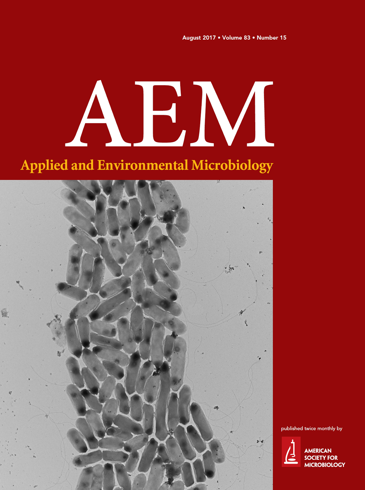

Publications
Journal Papers
2022
- Masao Inoue, Kimiho Omae, Issei Nakamoto, Ryoma Kamikawa, Takashi Yoshida, Yoshihiko Sako. Biome-specific distribution of Ni-containing carbon monoxide dehydrogenases. Extremophiles, 26, 9. (2022) DOI: 10.1007/s00792-022-01259-y
2021
- Kimiho Omae, Tatsuki Oguro, Masao Inoue, Yuto Fukuyama, Takashi Yoshida, Yoshihiko Sako. Diversity analysis of thermophilic hydrogenogenic carboxydotrophs by carbon monoxide dehydrogenase amplicon sequencing using new primers. Extremophiles, 25, 61–76. (2021) DOI: 10.1007/s00792-020-01211-y
2020
- Masao Inoue, Hikaru Izumihara, Yuto Fukuyama, Kimiho Omae, Takashi Yoshida, Yoshihiko Sako. Carbon monoxide-dependent transcriptional changes in a thermophilic, carbon monoxide-utilizing, hydrogen-evolving bacterium Calderihabitans maritimus KKC1 revealed by transcriptomic analysis. Extremophiles, 24, 551–564. (2020) DOI: 10.1007/s00792-020-01175-z
- Florian Prodinger, Hisashi Endo, Yasuhiro Gotoh, Yanze Li, Daichi Morimoto, Kimiho Omae, Kento Tominaga, Romain Blanc-Mathieu, Yoshihito Takano, Tetsuya Hayashi, Keizo Nagasaki, Takashi Yoshida, Hiroyuki Ogata. An optimized metabarcoding method for Mimiviridae. Microorganisms, 8, 506. (2020) DOI: 10.3390/microorganisms8040506
2019
- Yuto Fukuyama, Ayumi Tanimura, Masao Inoue, Kimiho Omae, Takashi Yoshida, Yoshihiko Sako. Draft genome sequences of two thermophilic Moorella sp. strains, isolated from an acidic hot spring in Japan. Microbiol Resour Announc, 8, e00663-19. (2019) DOI: 10.1128/MRA.00663-19
- Kimiho Omae, Yuto Fukuyama, Hisato Yasuda, Kenta Mise, Takashi Yoshida, Yoshihiko Sako. Diversity and distribution of thermophilic hydrogenogenic carboxydotrophs revealed by microbial community analysis in sediments from multiple hydrothermal environments in Japan. Arch Microbiol, 201, 969–982. (2019) DOI: 10.1007/s00203-019-01661-9
- Yuto Fukuyama, Kimiho Omae, Takashi Yoshida, Yoshihiko Sako. Transcriptome analysis of a thermophilic and hydrogenogenic carboxydotroph Carboxydothermus pertinax. Extremophiles, 23, 389–398 (2019) DOI: 10.1007/s00792-019-01091-x
- Masao Inoue, Issei Nakamoto, Kimiho Omae, Tatsuki Oguro, Hiroyuki Ogata, Takashi Yoshida, Yoshihiko Sako. Structural and phylogenetic diversity of anaerobic carbon-monoxide dehydrogenases. Front Microbiol, 9, 3353. (2019) DOI: 10.3389/fmicb.2018.03353
2018
- Yuto Fukuyama, Kimiho Omae, Yasuko Yoneda, Takashi Yoshida, Yoshihiko Sako. Insight into energy conservation via alternative carbon monoxide metabolism in Carboxydothermus pertinax revealed by comparative genome analysis. Appl Environ Microbiol, 84, e00458-18. (2018) DOI: 10.1128/AEM.00458-18
2017
- Kimiho Omae, Yasuko Yoneda, Yuto Fukuyama, Takashi Yoshida, Yoshihiko Sako. Genomic analysis of Calderihabitans maritimus KKC1, a thermophilic, hydrogenogenic, carboxydotrophic bacterium isolated from marine sediment. Appl Environ Microbiol, 83, e00832-17. (2017) DOI: 10.1128/AEM.00832-17
The electric micrograph of C. maritimus KKC1 was selected as a cover photo!

- Kimiho Omae, Yasuko Yoneda, Yuto Fukuyama, Takashi Yoshida, Yoshihiko Sako. Genomic analysis of Calderihabitans maritimus KKC1, a thermophilic, hydrogenogenic, carboxydotrophic bacterium isolated from marine sediment. Appl Environ Microbiol, 83, e00832-17. (2017) DOI: 10.1128/AEM.00832-17
- Yosuke Nishimura, Hiroyasu Watai, Takashi Honda, Tomoko Mihara, Kimiho Omae, Simon Roux, Romain Blanc-Mathieu, Keigo Yamamoto, Pascal Hingamp, Yoshihiko Sako, Matthew B Sullivan, Susumu Goto, Hiroyuki Ogata, Takashi Yoshida. Environmental viral genomes shed new light on virus-host interactions in the ocean. Msphere, 2, e00359-16. (2017) DOI: 10.1128/mSphere.00359-16
- Yuto Fukuyama, Tatsuki Oguro, Kimiho Omae, Yasuko Yoneda, Takashi Yoshida, Yoshihiko Sako. Draft genome sequences of two hydrogenogenic carboxydotrophic bacteria, Carboxydocella sp. strains JDF658 and ULO1, isolated from two distinct volcanic fronts in Japan. Genome Announc, 5, e00242-17. (2017) DOI: 10.1128/genomeA.00242-17
- Yuto Fukuyama, Kimiho Omae, Yasuko Yoneda, Takashi Yoshida, Yoshihiko Sako. Draft genome sequences of Carboxydothermus pertinax and C. islandicus, hydrogenogenic carboxydotrophic bacteria. Genome Announc, 5, e01648-16. (2017) DOI: 10.1128/genomeA.01648-16
2015
- Yasuko Yoneda, Sanae I Kano, Takashi Yoshida, Eitaro Ikeda, Yuto Fukuyama, Kimiho Omae, Shigeko Kimura-Sakai, Takashi Daifuku, Tetsuhiro Watanabe, Yoshihiko Sako. Detection of anaerobic carbon monoxide-oxidizing thermophiles in hydrothermal environments. FEMS Microbiol Ecol, 91, fiv093. (2015) DOI: 10.1093/femsec/fiv093
Reviews
- Yuto Fukuyama, Masao Inoue, Kimiho Omae, Takashi Yoshida, Yoshihiko Sako. Anaerobic and hydrogenogenic carbon monoxide-oxidizing prokaryotes: Versatile microbial conversion of a toxic gas into an available energy. Geoffrey Michael Gadd, Sima Sariaslani, eds. Advances in Applied Microbiology (Academic Press) 99-148. (2020)
Talks
2022
大前公保、西村 祐貴、富永 賢人、岩崎渉「網羅的対偶遺伝学：遺伝子の二者択一進化を利用した機能未知遺伝子の新規機能予測法」日本進化学会年大会第24回沼津大会、F-2、プラサヴェルデ（静岡県沼津市）、2022年8月4日-2022年8月7日（2022年8月6日；口頭発表）ポスドク口頭発表賞 最優秀賞受賞！
大前公保、⻄村祐貴、富永賢人、岩崎渉． 「網羅的対偶遺伝学による機能未知遺伝子の新規機能予測法」．第16回日本ゲノム微生物学会年会，オンライン． (2022/3/2)
2019
- 大前公保、福山宥斗、大黒達希、大神優祐、安田尚登、吉田天士、左子芳彦「全原核生物の 16S rRNA 系統における一酸化炭素 (CO) デヒドロゲナーゼの分布パターンを利用した水素生成型 CO 資化菌の分子生態」平成31年度日本水産学会春季大会、809、東京海洋大学（品川キャンパス）、2019年3月26日-3月29日（2019年3月27日；口頭発表）
2018
- 大前公保、福山宥斗、大黒達希、大神優祐、安田尚登、吉田天士、左子芳彦「火山性環境における一酸化炭素資化性菌の分布および多様性の解明」平成30年度日本水産学会春季大会、704、東京海洋大学（品川キャンパス）、2018年3月27日-3月29日（2018年3月27日；口頭発表）
2017
Kimiho Omae, Yasuko Yoneda, Yuto Fukuyama, Takashi Yoshida, Yoshihiko Sako. Genomic analysis of Calderihabitans maritimus KKC1, a thermophilic hydrogenogenic carboxydotrophic bacterium isolated from marine sediment. リトアニア（National Research Centre, Vilnius）、2017年8月29日
Kimiho Omae, Yasuko Yoneda, Yuto Fukuyama, Takashi Yoshida and Yoshihiko Sako. Genomic analysis of Calderihabitans maritimus KKC1, a thermophilic hydrogenogenic carboxydotrophic bacterium isolated from marine sediment. 日本水産学会創立85周年記念国際シンポジウム、SO08-26、東京海洋大学（品川キャンパス）、2017年9月22日-2017年9月24日（2017年9月23日；口頭発表）
大前公保、福山宥斗、大黒達希、大神優祐、吉田天士、左子芳彦「水素生成型一酸化炭素資化性菌の生態学的機能解明に向けた陸上熱水環境における微生物群集構造解析」第19回マイリンバイオテクノロジー学会、0A-2、東北大学（葉山新キャンパス）、2017年6月3日-2017年6月4日（2017年6月4日；口頭発表）
大前公保、福山宥斗、大黒達希、大神優祐、吉田天士、左子芳彦「一酸化炭素資化性菌の生態学的機能解明に向けた火山性環境における微生物群集構造解析」平成29年度日本水産学会春季大会、731、東京海洋大学（品川キャンパス）、2017年3月28日（口頭発表）
2016
- 大前公保、米田恭子、福山宥斗、吉田天士、左子芳彦「水素生成型新規一酸化炭素資化性好熱細菌Calderihabitans maritimusのゲノム解析」第18回マリンバイオテクノロジー学会、PA-16、北海道大学（函館キャンパス）、2016年5月28日（ポスター発表）
2015
- 大前公保、米田恭子、福山宥斗、吉田天士、左子芳彦「水素生成型一酸化炭素資化性菌Calderihabitans maritimus KKC1と酢酸生成菌Moorella spp.の比較ゲノム解析」平成27年度日本水産学会春季大会、731、東京海洋大学（品川キャンパス）、2015年3月27日-2015年3月31日（口頭発表）
2014
- 大前公保、吉田天士、米田恭子、福山宥斗、左子芳彦「海洋性水素生成型一酸化炭素資化性好熱細菌 Calderihabitans maritimus KKC1 のゲノム解析」平成26年度日本水産学会秋季大会、330、九州大学（箱崎キャンパス）、2014年9月19日-2014年9月22日（口頭発表）
Posters
2015
Kimiho Omae, Yasuko Yoneda, Yuto Fukuyama, Takashi Daifuku, Takashi Yoshida, Yoshihiko Sako. Genomic adaptation of the thermophilic hydrogenogenic carboxydotrophic bacterium from marine sediment, Calderihabitans maritimus KKC1, driven by carbon monoxide dehydrogenases. 2015日本微生物生態学会第30回、PH-109、土浦亀城プラザ、2015年10月17日-2015年10月20日（ポスター発表）
大前公保、米田恭子、福山宥斗、吉田天士、左子芳彦「水素生成型一酸化炭素資化性好熱細菌Calderihabitans maritimus KKC1のゲノム解析」第9回日本ゲノム微生物学会年会、2P-42（2St2-09）、神戸大学（六甲第2キャンパス）、2015年3月6日-2015年3月8日（ポスター発表）
Awards
- 2022/08/06. 日本進化学会年大会第24回沼津大会 ポスドク口頭発表賞 最優秀賞